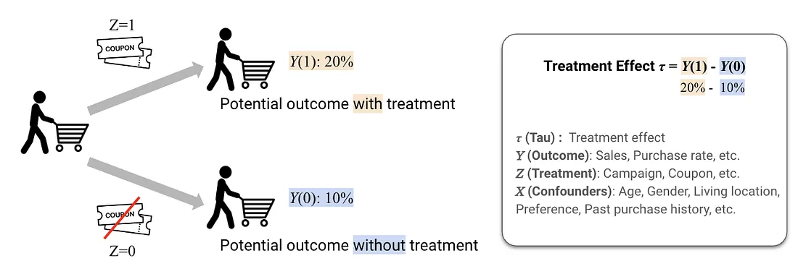
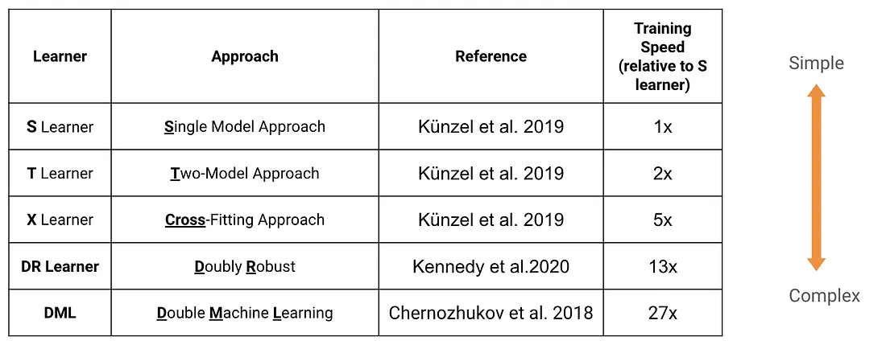

3.5 処置効果のためのメタラーナー
日本語版について
このページは英語版 Marketing Science in Python のAI翻訳です。英語版を正本とし、差異がある場合は英語版を優先してください。コード、Notebook、画像内の文字は英語のままです。 英語版を読む
前の章までの手法は、群全体について一つの数値、すなわち平均処置効果（ATE）を推定します。これは、処置が届いた全員に対する平均的な影響です。しかし、マーケティングでは平均が誤解を招く場合があります。たとえば、クーポンによって購入が平均5%増えたとしても、その数値は実態を隠します。20%のリフトを示す顧客もいれば、効果がない、あるいは減少する顧客もいるかもしれません。実際に反応する顧客を特定できれば、予算をはるかに効率よく使えます。
メタラーナーは、顧客一人ひとりの処置効果を推定しようとします。実務では、どのようなものでしょうか？
処置効果：ATE、CATE、ITE
処置効果を定義するため、潜在アウトカムの枠組みを使います。処置効果は、処置によって生じるアウトカムの差です。形式的には \(\tau = Y(1) - Y(0)\) であり、\(Y(1)\) は処置を受けた場合のアウトカム、\(Y(0)\) は対照条件でのアウトカムです。たとえば、クーポンありの潜在購入率が20%、なしの場合が10%なら、処置効果は10%です。

ここには3つの粒度があります。
- ATE（平均処置効果）：すべての顧客について平均した効果。「クーポンは売上を増やしたか？」
- CATE（条件付き平均処置効果）：特定の特徴を持つ顧客に対する平均効果。「クーポンは30歳未満の都市部の顧客へより高い効果があったか？」
- ITE（個別処置効果）：特定の個人に対する効果。実務では観察できませんが、CATEによって最善の推定を行います。
なぜ重要なのでしょうか。すべての顧客が同じように行動するわけではないからです。価格に敏感な顧客は値引きへ飛びつく一方、ブランドロイヤルティの高い顧客は、どちらにしても定価で購入したかもしれません。両者を識別できれば、どちらにしても購入した顧客へ利益を渡すのではなく、追加売上を実際に生む対象へ値引きを提供できます。
メタラーナーが必要な理由
「クーポンは売上を増やしたか？」という問いを考えます。答えるために、さまざまな顧客について、属性（年齢、性別、地域）、処置（クーポンあり／なし）、アウトカム（購入した／しなかった）を含むデータを見ます。
\(Y(1)\) 列はクーポンを使った場合のアウトカム、\(Y(0)\) 列はクーポンなしの場合のアウトカムです。同じ個人について両方の列があれば、一方から他方を引くだけで処置効果を計算できます。しかし、一人について観察できるアウトカムは一つだけです。

これを解決するため、メタラーナーを使います。顧客がもう一方の処置を受けていたら何が起きたかを予測する、機械学習の枠組みです。欠けている反実仮想を埋めることで、一人ひとりの処置効果を推定できます。
Sラーナー：単一モデルから始める
Sラーナーの「S」は「Single」を表します。一つの機械学習モデルを使うからです。処置指標を一つの特徴量として含め、すべてのデータで学習します。特徴 \(x\) を持つ顧客への効果を推定するため、一つのモデルから2つの予測を得ます。
\[\hat{Y}(1 \mid X=x) = \text{predicted outcome if treated}\]
\[\hat{Y}(0 \mid X=x) = \text{predicted outcome if not treated}\]
推定処置効果は、両者の差です。
\[\hat{\tau}(x) = \hat{Y}(1 \mid X=x) - \hat{Y}(0 \mid X=x)\]
コードでは、Sラーナーは同じモデルから2つの予測を得ます。一度は処置を1に、もう一度は0に設定します。

擬似コード：
# Train a single model with treatment as a feature
X = df[['age', 'gender', 'location', 'treatment']]
y = df['sales']
model = xgb.XGBRegressor()
model.fit(X, y)
df['sales_treated'] = model.predict(X.assign(treatment=1))
df['sales_control'] = model.predict(X.assign(treatment=0))
df['treatment_effect'] = df['sales_treated'] - df['sales_control']
ATE = df['treatment_effect'].mean()Sラーナーは最も単純な出発点であり、妥当なベースラインになることがよくあります。しかし、重要な弱点があります。ほかの特徴量と比べて処置効果が小さい場合、特に正則化を使うと、モデルが処置変数を無視してしまうことがあります。その結果、CATE推定値がゼロの方向へ偏る可能性があります。
Tラーナー：2つの別々のモデル
Tラーナーの「T」は「Two」を表します。一つではなく、処置群と対照群で一つずつ、別々のモデルを2つ学習します。処置群のモデルから \(\hat{Y}(1 \mid X=x)\)、対照群のモデルから \(\hat{Y}(0 \mid X=x)\) を得て、差を取ります。
\[\hat{\tau}(x) = \hat{Y}(1 \mid X=x) - \hat{Y}(0 \mid X=x)\]

擬似コード：
df_treated = df[df['treatment'] == 1]
df_control = df[df['treatment'] == 0]
# Train separate models, one per arm
model_treated = xgb.XGBRegressor()
model_treated.fit(df_treated[['age', 'gender', 'location']], df_treated['sales'])
model_control = xgb.XGBRegressor()
model_control.fit(df_control[['age', 'gender', 'location']], df_control['sales'])
df['sales_treated'] = model_treated.predict(df[['age', 'gender', 'location']])
df['sales_control'] = model_control.predict(df[['age', 'gender', 'location']])
df['treatment_effect'] = df['sales_treated'] - df['sales_control']
ATE = df['treatment_effect'].mean()Tラーナーは、各モデルが処置群と対照群について異なるパターンを学習できるため、より柔軟です。ただし、トレードオフがあります。特に処置群と対照群の大きさが不均衡な場合、分散が大きくなる可能性があります。予測値の差を取ると、両方のモデルの誤差が加算されることがあります。
Sラーナーは単純ですが、効果を過小評価する傾向があります。Tラーナーはこの失敗を避けますが、推定値のノイズが増えます。次に何ができるでしょうか？
高度なメタラーナー
SとTに加え、その限界へ対応する、より高度な手法がいくつかあります。
- Xラーナー：不均衡な処置群のために設計されたTラーナーの拡張です。欠けている反実仮想を補完し、傾向スコアによる重みづけで合成します。一方の群がもう一方より大幅に大きい場合にうまく機能します。
- DRラーナー（Doubly Robust）：アウトカムのモデリングと傾向スコア推定を組み合わせます。どちらか一方のモデルが正しく指定されていれば一致性があるため、「二重に頑健」と呼ばれます。
- DML（Double Machine Learning）：クロスフィッティングを使って過学習バイアスを避け、強い理論的保証を持ちます。計算コストが高く、付属NotebookではSラーナーよりおよそ1桁遅くなりますが、適切な信頼区間を提供します。

理論から、各手法が何を最適化するはずかが分かります。しかし、本当のテストは、同じデータセットに適用し、実務上の違いを確認することです。
例：不均一なメール効果を推定する
これらの手法がどう振る舞うかを見るには、その働きを確認できるデータセットが必要です。これは見かけより困難です。実データでは顧客の真の処置効果を観察できないため、メタラーナーが正しいパターンを復元したのか、もっともらしいノイズを生んだだけなのかを判断できません。
Kevin HillstromのMineThatDataメール実験を基にした半合成の例で、この問題へ対応します。これは64,000人の顧客を、男性向け商品メール、女性向け商品メール、メールなしへ無作為に割り当てた、古典的なマーケティングデータセットです。実際の顧客特徴量（直近購入、購入履歴、チャネルなど）と、男性向けメール対メールなしという二値比較の実際の無作為割り当てを保持します。シミュレーションするのはアウトカムだけです。ベースラインの購入確率と、男性向け商品の購入者、最近活動した顧客、複数チャネルの買い物客で大きくなる処置効果 \(\tau(x)\) を定義します。\(\tau(x)\) を自分たちで作ったため、各顧客の真のCATEが分かり、すべてのラーナーを評価できます。
これは教育用の仕掛けです。目標は、実験自体よりうまく平均効果を推定することではなく、メタラーナーが埋め込んだ不均一性を復元できるかを確認することです。
付属Notebook： sec3.5_meta_learners.ipynb は、半合成のMineThatData実験について、S、T、X、DRラーナーとCausalForestDMLを既知の真のCATEと比較します。
GitHubで見る
5つのラーナーはすべて、平均効果と、さらに有用なセグメント単位のパターンを復元します。以下の散布図は、代表的なラーナーについて推定CATEと真の効果を比較しています。推定値は45度線の周辺に集まるため、顧客はおおむね正しい順序に並んでいます。縦方向のばらつきは、二値アウトカムのノイズを反映しています。

セグメント内で平均すると、復元がより明確になります。男性向け商品の購入状況、直近購入、購入履歴、チャネルで分けると、推定効果は真値をよく追い、男性向け商品の購入者、最近の顧客、複数チャネルの買い物客へ埋め込んだ高い反応を再現します。

どのラーナーが顧客を最もうまく順位づけするかは、データによって異なります。ホールドアウトセットで真のCATEに照らして評価すると、このクリーンで均衡した実験では、単純なラーナーが優位になります。
| 手法 | Corr(est, true) | MAE | 推定CATEの平均 |
|---|---|---|---|
| S-Learner | 0.77 | 0.030 | 0.108 |
| X-Learner | 0.69 | 0.038 | 0.109 |
| CausalForestDML | 0.60 | 0.051 | 0.109 |
| T-Learner | 0.59 | 0.050 | 0.109 |
| DR-Learner | 0.58 | 0.049 | 0.109 |
5つすべてが、埋め込んだ約11ポイントの平均効果を復元します。違いは真のCATEとの相関であり、これが順位づけの品質を左右します。SラーナーとXラーナーが上位となる一方、2モデルとクロスフィッティングを使うラーナーは分散の代償を払います。ノイズが多い、または不均衡なデータでは順序が変わる可能性があります。だからこそ、手法の評判を信じるのではなく、復元を確認します。
CATEを信頼する前に確認すること
この例は、無作為化された処置、完全なオーバーラップ、既知の答えを持ち、意図的に扱いやすく作られていました。実際のプロジェクトがそうであることはほとんどありません。CATE推定値に基づいて行動する前に、次を確認します。
- メタラーナーは因果的な比較を作りません。すでに存在する比較の中で、効果がどう変わるかをモデル化します。そのため、観察データのCATEは、基礎となる比較が持つすべての交絡問題を引き継ぎます。
- 実データで個別処置効果が観察されることはありません。ここでラーナーを評価できたのは、真値をシミュレーションしたからです。
- CATEはモデルによる推定値であり、測定値ではありません。一人の顧客に対する文字どおりの数値ではなく、群またはセグメント単位で読みます。
- 平均値が妥当かを確認します。実験における単純な平均値の差から、推定CATEの平均が大きく離れていれば、何かが間違っています。
- ラーナー間の安定性を確認します。S、T、X、因果フォレストで順位が一致しなければ、まだどれも信頼しません。
- オーバーラップに注意します。処置顧客と対照顧客が共存しない領域では、CATEは推定ではなく外挿です。
要点
- ATEは処置に効果があったかを問い、CATEは誰に効果があったかを問う。メタラーナーは、すでに持っている因果的比較の中でその変動を推定する。測定していない交絡は、どの手法でも修復できない。
- CATEは群単位のモデル推定値であり、実データでは真の効果を観測できないため、評判だけで信頼できるラーナーはない。平均値を実験と照合し、ラーナー間の安定性とオーバーラップを確認する。